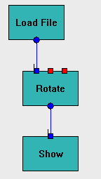

Debug Virtual Machine  (january 2009)
(january 2009)
Application Designer / Domain Expert / Control Designer / Core Developer
Introduction
The Debug_Table is a convenient way to follow the flow of the data in relation to the execution of the virtual machine. For the moment the Debug_Table is created in the form of a html page, that can be viewed afterwards. In some cases it's more convenient to see the realtime data, which can easily be added. The Debug_Table and it's class definition can be found in PyLab_Works_Globals.
The following flags are of special interest for Debug_Table
-debugtable
-vmdelayxxxx, where xxxx is delay in msec
Example
For the example we've chosen the very first example, rotating an image, because it's simple but yet shows most of the features.
|
 |
Looking at the image below, the meaning of the columns (name of the Brick) is shown in the green bars, which are shown at regular intervals. The first column contains two numbers, the first one is just a line number for references, the second number is the cycle counter of the virtual machine.
The red blocks are execute statements. The execute statements are only shown if the inputs or the parameters of the Brick have changed.
line 2: here we see "Load General" which is the automatic loading of the saved parameters of each brick. We also can see that these parameters are send to the Parameter-array. Notice that sometimes the parameter array is loaded twice, which is perfectly normal, because the automatic loading not only send the value to the control, but also the parameter array. Now some controls (but not all) also trigger an event when their value is set. This event sends the value to the parameter. Another strange issue, the Brick Show loads a parameter, but doesn't have a explicit parameter, should be investigated further.
line 3: execute Brick Load_File, it's very logical that this will be the first Brick that will perform some action. We see it calculates an output signal and send the output signal to all receivers, in this case only the Brick Rotate.
line 4: The Brick Rotate receives a new input value. The value of the input signals is deliberately not shown, because it can easily be seen in the line above.
line 8: Here we see the parameter of the Brick Rotate changing, due to movement of the slider by the user. Because in this demo the virtual machine runs slowly, we can get more than 1 parameter change, before the virtual machine can act on these changes.
line 15: when the application closes, all the information stored in the buffer is dumped. Here we see that the automatic saving, saves the settings of each Brick.
Current tags
|
In-3 |
The value of Input-3 has changed |
|
Load General |
Automatic Loading of the parameters, by the parent class Brick |
|
Load ????? |
Explicit Loading of the parameters, by the Brick itself |
|
Out-3 |
The value of Output-3 has changed |
|
Out-3 Send To |
Send the changed value of Out-3 to all receivers |
|
Par-2 |
The value of Par-2 has changed. In most cases this happens when the user interacts with the GUI. It also happens when the initial settings of the Brick are loaded. |
|
Save General |
Automatic Saving of the parameters, by the parent class Brick |
|
Save ????? |
Explicit Saving of the parameters, by the Brick itself |
Adding new tags
Example 1
too many output changes
caused by setting the output twice, like this:
Caused by changing the output and setting the modified flag. The modified flag should only be used when a complex variable like a numpy array ( that is changed in place) is changed. In this case a list of numpy arrays is changed !!
Example 2
Generating output signals, while there is no reason for, caused by incorrect or none change checking in the execute function.
Here Par-3 is changed by the user through the GUI. Because the signal generator ( AD Converter) is stopped (you don't see any activity there, there shouldn't be any signals OUT-1 in the BP_Analysis.
And if you look at the code, you see there's no checking at all.
The correct way is to set the output signal, only if the input signal has changed, like this
which will result in the normal patern.